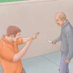

No bathrooms??
September 30, 2025 by Jaheim Dazzell
Have you guys ever noticed how hard it is to find a good working bathroom here? Like at first it was funny, but now I'm like dang brug.....can I urinate??? It's like playing Russian roulette but with toilet seats. You never know what you're gonna get.
I'm starting to think the real final exam at UWI isn't CS or Math - it's finding a decent bathroom between classes without having to trek across campus like you're on a fairytale adventure. Anyway, if you see me speed-walking with that particular look of desperation, you'll know what's up. Wish me luck folks - it's a jungle out there! 🚽💨
Break-up Season I guess
October 5, 2025 by Jaheim Dazzell

So the other day I broke things off with my girlfriend and it feels pretty weird. Not weird because I'm alone, but weird because everyone else is too. My neighbor and her boyfriend had been living together for six years straight. Suddenly BOOM! One fight and they're done.
I don't know how they managed 6 years when I can barely manage 2 weeks. I'm noticing alot more single people up and about, which is weird cuz I thought love was supposed to be "in the air". Maybe there's something in the water, or maybe we're all just realizing that being happily single beats being miserably coupled. On the bright side, my phone storage has never been better now that I don't have to keep 500+ photos of someone else's lunch. Silver linings, people! 📱💫